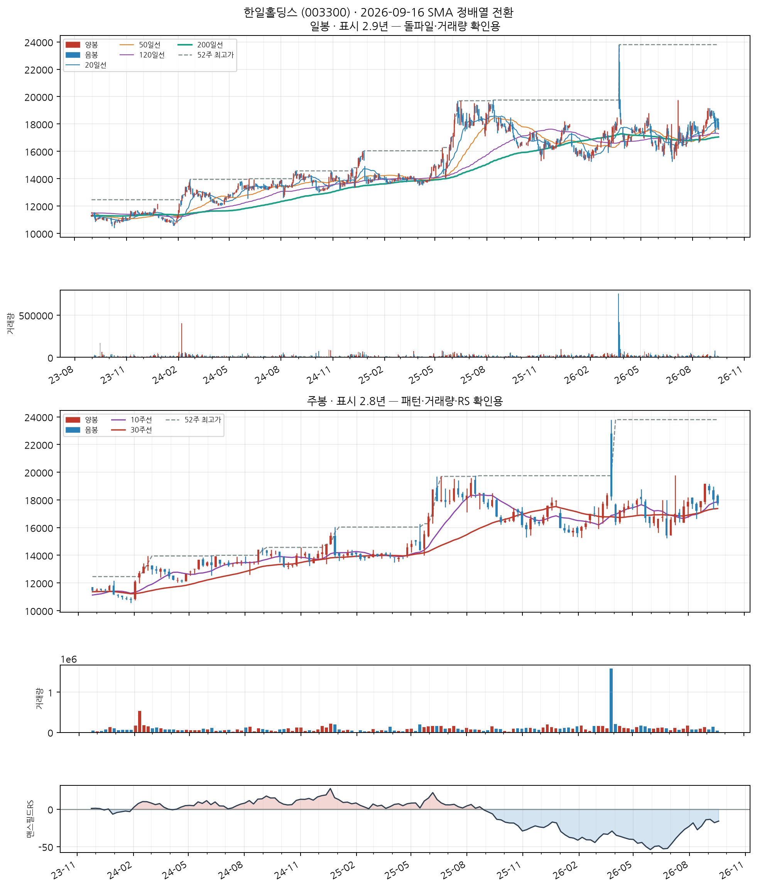
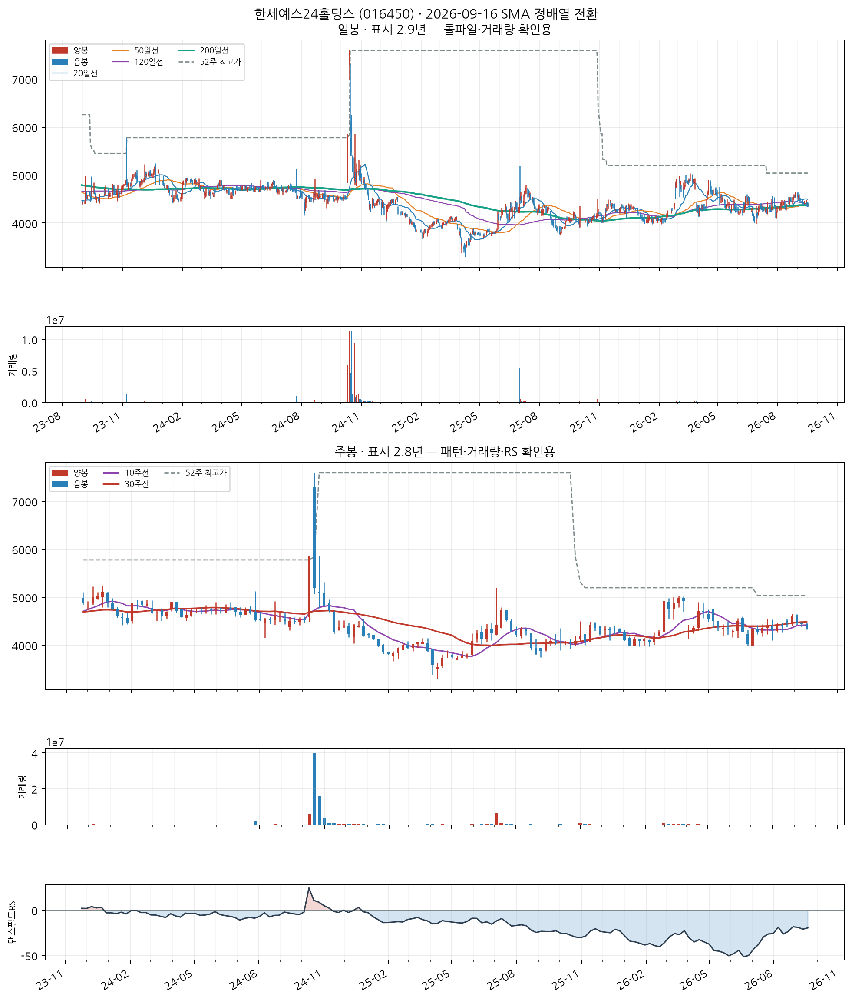
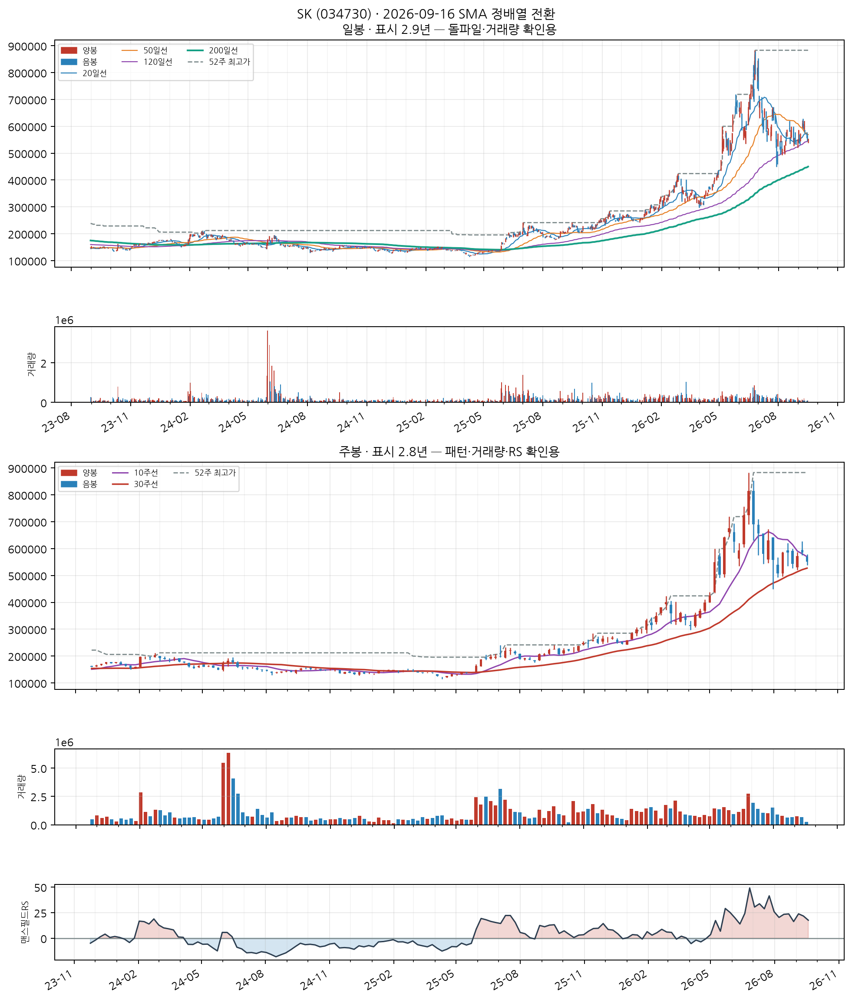
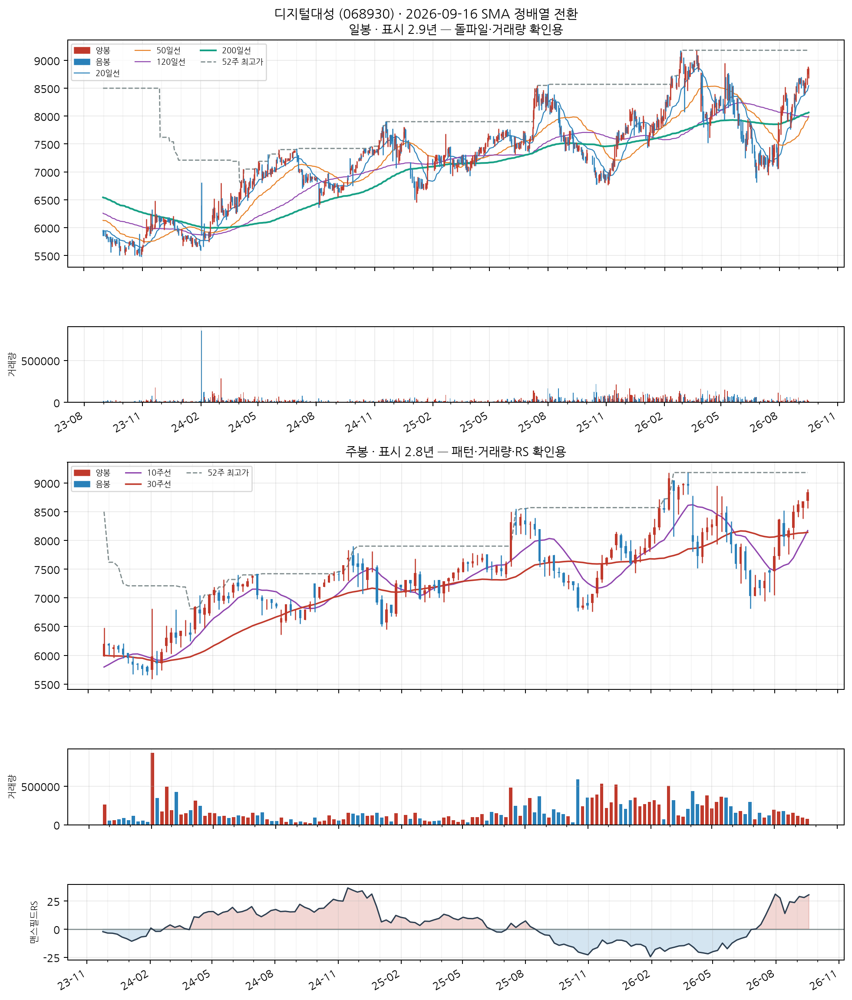
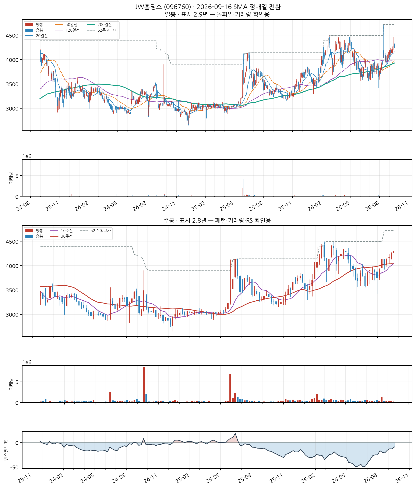
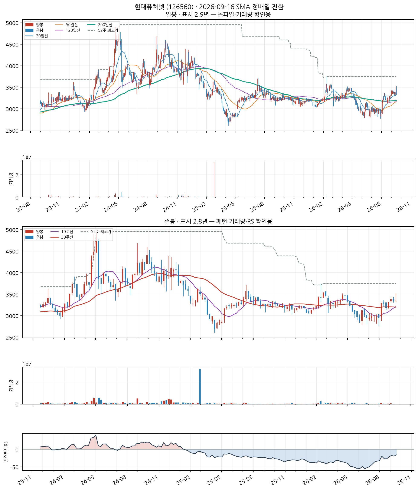
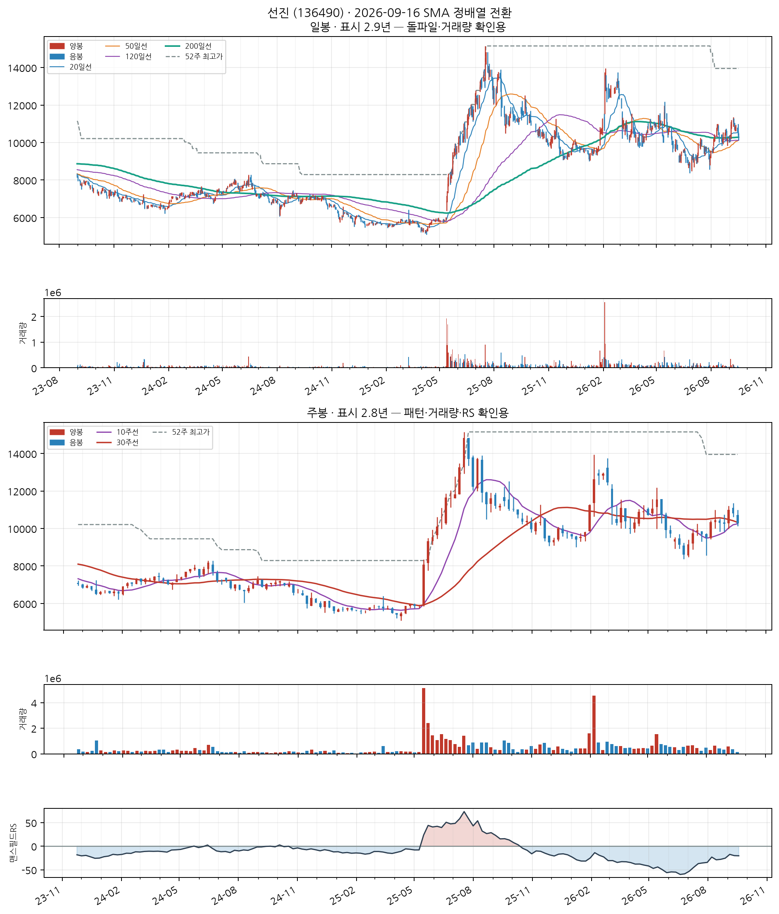

이 전략의 진입 조건
- SMA 정배열 성립 — 20일선 > 50일선 > 120일선 순서가 오늘 성립할 것
- 정배열이 최근에 시작 — 그 정배열이 시작된 지 10거래일 이내일 것 (이미 오래 정배열이던 종목은 제외 — '막 시작한 것'만 잡습니다)
자세히 — 한계와 주의사항
이 두 조건이 게이트 전부입니다. 나머지(거래량·모멘텀)는 순위를 매기는 점수일 뿐 통과 여부를 가르지 않습니다.
점수 = 신선도 + 거래량배수 + 모멘텀
· 신선도: 정배열이 시작된 지 얼마나 됐는지 (오늘 막 시작 = 1.0)
· 거래량배수: 오늘 거래량 ÷ 최근 평균 거래량 (최대 3배)
· 모멘텀: 정배열 시작일 종가 대비 오늘 종가 상승률 ÷ 10 (하락 중이면 0)
52주 신고가 스캐너와 목적이 반대입니다 — 그쪽은 이미 오래 오른 리더주를 계속 잡고, 이쪽은 이제 막 추세가 만들어진 종목만 잡습니다.
백테스트 파라미터(손절 −8%, 익절 +24% 등)는 52주 신고가 스캐너에서 그대로 가져온 값이고 Launch Pad 자체 데이터로 재튜닝한 적이 없습니다.
한일홀딩스 (003300)
13일전 포착
KOSPI
시멘트, 석회, 플라스터 및 그 제품 제조업
업종 참고: RS 평균 42/99(업종 중 상위 68%) · 오늘 신호 1건 · 업종 평균이 코스피 대비 -43.8%p(126일), 종목별 편차 ±13%p
🧪 자체 섹터 분류(실험적, 참고용): KPX홀딩스·삼영무역 등 29종목 (업종 혼재)
섹터 내 RS 순위: 13/29위 (RS 57/99)
섹터 1~3위: KPX홀딩스(83), 삼영무역(80), KPX케미칼(80)
※ 자체 상관관계 계산(최근 1년) — 검증 시 기준업종 11개 중 8개 정확. 주 단위로 구성종목이 일부 바뀔 수 있음(주간 일치도 실측 0.53)
종가 17,740 · 거래대금 3.1억
정배열 10일차거래량비 0.8x정배열 후 -6.6%
손절 16,321 | 목표 21,998 | 수량 563주

📐 차트 패턴 판정: 컵위드핸들 형태 완성·미돌파 확신 중간 판정 기준(PDF)
컵(15주·깊이 19.5%)+핸들 형태는 있으나 피벗 19,160를 아직 넘지 못했다.
가장 강한 반증 선행 추세: 선행 상승 +8.6% — +20%에 못 미침
경쟁 후보·더 단순한 설명 이중바닥(실패·확신 낮음) / 역헤드앤숄더(형성 중·확신 중간)
측정표 (주봉 종가 기준, 판정일 2026-09-16 이후 데이터 미사용)
조건별 판정
- 부분충족 선행 추세 — 선행 상승 +8.6% — +20%에 못 미침
- 충족 기간 — 컵 15주 (기준 7~65주)
- 충족 깊이 — 컵 깊이 19.5% (기준 12%~33%)
- 충족 림 대칭 — 좌우 림 차이 5.7% ≤ 12%
- 충족 U자 모양 — 저점이 컵 구간의 40% 지점(중앙 부근)
- 충족 베이스 거래량 수축 — 컵 구간 평균 = 직전 15주 평균의 0.47배
- 충족 핸들 — 핸들 3주·깊이 7.4% (기준 ≤15%, 컵 깊이의 절반 이하)
- 충족 핸들 거래량 수축 — 핸들 평균 = 컵 구간 평균의 0.89배
- 충족 최근성 — 마지막 구조 피벗(2026-09-18)이 0주 전
- 미충족 피벗 돌파 — 종가가 아직 확인선 위로 안 올라옴(-7.4%)
- 판정불가 돌파 거래량 — 돌파 전
추가로 필요한 데이터 장중 고저 기준 깊이(여기 수치는 주봉 종가 기준)
패턴만으로 매수 추천이나 목표 달성 확률을 만들지 않습니다. 수치 기준은 잠정치이며 라벨 데이터로 검증되지 않았습니다.
CC — 분기 실적 성장 우수
2026 반기보고서(누적) · 순이익 흑자전환(+nan억원→+550억원) · EPS 흑자전환(+nan원→+1,105원)
DART 공시 기준 · 분기 단독 전년동기 대비 · 직전 분기보다 성장률이 높아짐(가속)
AA — 연간 실적 성장 미흡
2025 사업보고서(연간) · 순이익 -68.8% · EPS -73.4%
DART 공시 기준 · 연간 전년동기 대비 · 최근 3년 연속 증가는 아님 — 오닐 A 기준 미충족으로 한 단계 낮춤
NN — 신고가·모멘텀 데이터 없음
신고가 데이터 없음
SS — 수급(거래량) 미흡
20일 평균 대비 0.81배
유통주식수·순매수 데이터는 미보유 (거래량으로만 근사)
LL — 주도주(상대강도) 보통
RS 등급 57/99 (126거래일 ≈ 6개월 기준 · 유니버스 1000종목 중 백분위) · 지수대비 -33.2%p
상위 시가총액 유니버스 기준 — KRX 전체 대비 백분위 아님 · 오닐의 RS Rating은 52주 기준이지만 여기는 126거래일로, 같은 리포트의 6개월 모멘텀과 기간을 맞춘 값이다(원전과 다름)
II — 기관·외국인 수급 양호
20일 순매수 +7.11% (거래대금 대비) · 최근절반 -8.64% vs 이전절반 +20.00% (약화) · 순매수 11일 · 누적 +5.5억원
**오닐의 I(기관 보유 종목 수의 증가)가 아니라 단기 순매수 흐름**을 쓴 대용값이다 — 보유 기관 수는 국내에 공개 데이터가 없다 · 한국투자증권 공식 API(KIS) 기준 · 기관+외국인 합산, 기타법인 제외로 거래대금은 소폭 과소추정 · 임계값은 아직 실측 검증 전 잠정치 — 수급 이력이 쌓이면 다른 지표와 같은 방식으로 구분력을 측정해 조정 예정 · 최근 유입이 이전보다 약해져 한 단계 낮춤
MM — 시장방향 미흡
KOSPI 지수가 60일선 아래
**오닐의 M(분산일·추종일 계수)이 아니라 지수의 이동평균 상회 여부**를 쓴 대용값이다 · 실제 매매 필터로는 미적용(표시 전용) — 종목 선별보다 지수 자체 타이밍이 더 효율적이라는 자체 검증 결과 있음 (reports/vs_kospi.md)
한세예스24홀딩스 (016450)
신규
KOSPI
봉제의복 제조업
업종 참고: RS 평균 50/99(업종 중 상위 55%) · 오늘 신호 1건 · 업종 평균이 코스피 대비 -36.9%p(126일), 종목별 편차 ±15%p
🧪 자체 섹터 분류(실험적, 참고용): KPX홀딩스·삼영무역 등 29종목 (업종 혼재)
섹터 내 RS 순위: 15/29위 (RS 54/99)
섹터 1~3위: KPX홀딩스(83), 삼영무역(80), KPX케미칼(80)
※ 자체 상관관계 계산(최근 1년) — 검증 시 기준업종 11개 중 8개 정확. 주 단위로 구성종목이 일부 바뀔 수 있음(주간 일치도 실측 0.53)
종가 4,340 · 거래대금 0.60억
정배열 1일차거래량비 0.8x정배열 후 +0.0%
손절 3,993 | 목표 5,382 | 수량 2,304주

📐 차트 패턴 판정: 컵위드핸들 형태 완성·미돌파 확신 중간 판정 기준(PDF)
컵(11주·깊이 12.9%)+핸들 형태는 있으나 피벗 4,625를 아직 넘지 못했다.
가장 강한 반증 선행 추세: 선행 상승 +4.2% — +20%에 못 미침
경쟁 후보·더 단순한 설명 이중바닥(형성 중·확신 낮음) / 역헤드앤숄더(형성 중·확신 낮음)
측정표 (주봉 종가 기준, 판정일 2026-09-16 이후 데이터 미사용)
조건별 판정
- 부분충족 선행 추세 — 선행 상승 +4.2% — +20%에 못 미침
- 충족 기간 — 컵 11주 (기준 7~65주)
- 충족 깊이 — 컵 깊이 12.9% (기준 12%~33%)
- 충족 림 대칭 — 좌우 림 차이 2.7% ≤ 12%
- 부분충족 U자 모양 — 저점이 컵 구간의 18% 지점 — V자·비대칭 가능
- 충족 베이스 거래량 수축 — 컵 구간 평균 = 직전 11주 평균의 0.43배
- 충족 핸들 — 핸들 3주·깊이 6.2% (기준 ≤15%, 컵 깊이의 절반 이하)
- 충족 핸들 거래량 수축 — 핸들 평균 = 컵 구간 평균의 0.68배
- 충족 최근성 — 마지막 구조 피벗(2026-09-18)이 0주 전
- 미충족 피벗 돌파 — 종가가 아직 확인선 위로 안 올라옴(-6.2%)
- 판정불가 돌파 거래량 — 돌파 전
추가로 필요한 데이터 장중 고저 기준 깊이(여기 수치는 주봉 종가 기준)
패턴만으로 매수 추천이나 목표 달성 확률을 만들지 않습니다. 수치 기준은 잠정치이며 라벨 데이터로 검증되지 않았습니다.
CC — 분기 실적 성장 양호
2026 반기보고서(누적) · 순이익 흑자전환(+nan억원→+116억원) · EPS 흑자전환(+nan원→+140원)
DART 공시 기준 · 분기 단독 전년동기 대비 · 직전 분기보다 성장률이 낮아짐(감속) — 오닐 C 기준으로 한 단계 낮춤
AA — 연간 실적 성장 미흡
2025 사업보고서(연간) · 순이익 적자전환(+250억원→-232억원) · EPS 적자전환(+116원→-842원) · 매출 +20.5%
DART 공시 기준 · 연간 전년동기 대비 · 최근 3년 연속 증가는 아님 — 오닐 A 기준 미충족으로 한 단계 낮춤
NN — 신고가·모멘텀 데이터 없음
신고가 데이터 없음
SS — 수급(거래량) 미흡
20일 평균 대비 0.84배
유통주식수·순매수 데이터는 미보유 (거래량으로만 근사)
LL — 주도주(상대강도) 보통
RS 등급 54/99 (126거래일 ≈ 6개월 기준 · 유니버스 1000종목 중 백분위) · 지수대비 -35.5%p
상위 시가총액 유니버스 기준 — KRX 전체 대비 백분위 아님 · 오닐의 RS Rating은 52주 기준이지만 여기는 126거래일로, 같은 리포트의 6개월 모멘텀과 기간을 맞춘 값이다(원전과 다름)
II — 기관·외국인 수급 보통
20일 순매수 +1.43% (거래대금 대비) · 최근절반 -9.18% vs 이전절반 +8.09% (약화) · 순매수 10일 · 누적 +0.2억원
**오닐의 I(기관 보유 종목 수의 증가)가 아니라 단기 순매수 흐름**을 쓴 대용값이다 — 보유 기관 수는 국내에 공개 데이터가 없다 · 한국투자증권 공식 API(KIS) 기준 · 기관+외국인 합산, 기타법인 제외로 거래대금은 소폭 과소추정 · 임계값은 아직 실측 검증 전 잠정치 — 수급 이력이 쌓이면 다른 지표와 같은 방식으로 구분력을 측정해 조정 예정 · 최근 유입이 이전보다 약해져 한 단계 낮춤
MM — 시장방향 미흡
KOSPI 지수가 60일선 아래
**오닐의 M(분산일·추종일 계수)이 아니라 지수의 이동평균 상회 여부**를 쓴 대용값이다 · 실제 매매 필터로는 미적용(표시 전용) — 종목 선별보다 지수 자체 타이밍이 더 효율적이라는 자체 검증 결과 있음 (reports/vs_kospi.md)
기타 금융업
업종 참고: RS 평균 58/99(업종 중 상위 27%) · 오늘 신호 6건 · 업종 평균이 코스피 대비 -26.5%p(126일), 종목별 편차 ±28%p
🧪 자체 섹터 분류(실험적, 참고용): 가온전선·KBI메탈 등 30종목 (업종 혼재)
섹터 내 RS 순위: 6/30위 (RS 94/99)
섹터 1~3위: 가온전선(99), KBI메탈(98), 대원전선(97)
※ 자체 상관관계 계산(최근 1년) — 검증 시 기준업종 11개 중 8개 정확. 주 단위로 구성종목이 일부 바뀔 수 있음(주간 일치도 실측 0.53)
종가 552,000 · 거래대금 542억
정배열 1일차거래량비 0.7x정배열 후 +0.0%
손절 507,840 | 목표 684,480 | 수량 18주

📐 차트 패턴 판정: 후보 없음 후보 없음 판정 기준(PDF)
세 패턴 모두 필수 조건을 채운 후보가 없다(가장 가까운 이중바닥 후보: 두 저점 일치: 저점 차이 43.4% — 같은 지지대로 보기 어려움(10% 초과)).
가장 강한 반증 이중바닥: 두 저점 일치: 저점 차이 43.4% — 같은 지지대로 보기 어려움(10% 초과); 컵위드핸들: 깊이: 컵 깊이 61.7% — 기준 12%~33%(고변동 최대 50%)를 벗어남
경쟁 후보·더 단순한 설명 더 단순한 설명: 최근 26주 상승 추세 지속(+53.3%) — 베이스 없음
추가로 필요한 데이터 장중 고저 기준 깊이(여기 수치는 주봉 종가 기준)
패턴만으로 매수 추천이나 목표 달성 확률을 만들지 않습니다. 수치 기준은 잠정치이며 라벨 데이터로 검증되지 않았습니다.
CC — 분기 실적 성장 우수
2026 반기보고서(누적) · EPS 흑자전환(+nan원→+108,301원) · 매출 흑자전환(+nan억원→+421,247억원)
DART 공시 기준 · 분기 단독 전년동기 대비
AA — 연간 실적 성장 미흡
2025 사업보고서(연간) · 순이익 +572.3% · EPS 흑자전환(-23,455원→+29,050원) · 매출 -0.6%
DART 공시 기준 · 연간 전년동기 대비 · 순이익은 연결 총계(비지배지분 포함), EPS는 지배주주 기준이라 둘의 증감 방향이 다를 수 있음
NN — 신고가·모멘텀 데이터 없음
신고가 데이터 없음
SS — 수급(거래량) 미흡
20일 평균 대비 0.73배
유통주식수·순매수 데이터는 미보유 (거래량으로만 근사)
LL — 주도주(상대강도) 우수
RS 등급 94/99 (126거래일 ≈ 6개월 기준 · 유니버스 1000종목 중 백분위) · 지수대비 +43.5%p
상위 시가총액 유니버스 기준 — KRX 전체 대비 백분위 아님 · 오닐의 RS Rating은 52주 기준이지만 여기는 126거래일로, 같은 리포트의 6개월 모멘텀과 기간을 맞춘 값이다(원전과 다름)
II — 기관·외국인 수급 우수
20일 순매수 +4.71% (거래대금 대비) · 최근절반 +5.67% vs 이전절반 +4.00% (개선) · 순매수 12일 · 누적 +717.7억원
**오닐의 I(기관 보유 종목 수의 증가)가 아니라 단기 순매수 흐름**을 쓴 대용값이다 — 보유 기관 수는 국내에 공개 데이터가 없다 · 한국투자증권 공식 API(KIS) 기준 · 기관+외국인 합산, 기타법인 제외로 거래대금은 소폭 과소추정 · 임계값은 아직 실측 검증 전 잠정치 — 수급 이력이 쌓이면 다른 지표와 같은 방식으로 구분력을 측정해 조정 예정
MM — 시장방향 미흡
KOSPI 지수가 60일선 아래
**오닐의 M(분산일·추종일 계수)이 아니라 지수의 이동평균 상회 여부**를 쓴 대용값이다 · 실제 매매 필터로는 미적용(표시 전용) — 종목 선별보다 지수 자체 타이밍이 더 효율적이라는 자체 검증 결과 있음 (reports/vs_kospi.md)
일반 교습 학원
업종 참고: RS 평균 데이터 부족 · 오늘 신호 1건
🧪 자체 섹터 분류(실험적, 참고용): 디지털대성·KCC글라스 등 5종목 (업종 혼재)
섹터 내 RS 순위: 1/5위 (RS 68/99)
섹터 1~3위: 디지털대성(68), KCC글라스(63), 교촌에프앤비(59)
※ 자체 상관관계 계산(최근 1년) — 검증 시 기준업종 11개 중 8개 정확. 주 단위로 구성종목이 일부 바뀔 수 있음(주간 일치도 실측 0.53)
종가 8,840 · 거래대금 1.6억
정배열 1일차거래량비 0.8x정배열 후 +0.0%
손절 8,133 | 목표 10,962 | 수량 1,131주

📐 차트 패턴 판정: 이중바닥 돌파 확인 확신 낮음 판정 기준(PDF)
두 저점(7,730/7,030) 뒤 중간 고점 8,470를 종가로 넘었다.
가장 강한 반증 선행 추세: 선행 추세가 상승(+19.2%) — 상승 중 눌림일 수 있어 반전형 전제가 없다
경쟁 후보·더 단순한 설명 컵위드핸들(형성 중·확신 낮음) / 더 단순한 설명: 선행 하락이 없어 반전형이 아니라 상승 추세 중 눌림(조정)일 수 있다
측정표 (주봉 종가 기준, 판정일 2026-09-16 이후 데이터 미사용)
조건별 판정
- 미충족 선행 추세 — 선행 추세가 상승(+19.2%) — 상승 중 눌림일 수 있어 반전형 전제가 없다
- 부분충족 두 저점 일치 — 저점 차이 9.1% — 6% 초과
- 충족 중간 반등 — 중간 반등 20.5% ≥ 8%
- 충족 기간 — 베이스 29주 ≥ 7주
- 충족 깊이 — 베이스 깊이 22.6% ≤ 40%
- 충족 저점2 매도 약화 — 저점2 부근 거래량 = 저점1 부근의 0.52배
- 충족 최근성 — 돌파 주(2026-08-28)가 3주 전
- 충족 넥라인 돌파 — 2026-08-28 주 종가 8,500 > 확인선 — 돌파 후 3주 경과
- 부분충족 돌파 거래량 — 돌파 주 거래량 = 직전 10주 평균의 1.02배 (기준 1.4배)
추가로 필요한 데이터 장중 고저 기준 깊이(여기 수치는 주봉 종가 기준)
패턴만으로 매수 추천이나 목표 달성 확률을 만들지 않습니다. 수치 기준은 잠정치이며 라벨 데이터로 검증되지 않았습니다.
CC — 분기 실적 성장 양호
2026 반기보고서(누적) · 순이익 흑자전환(+nan억원→+201억원) · EPS 흑자전환(+nan원→+712원) · 매출 흑자전환(+nan억원→+690억원)
DART 공시 기준 · 분기 단독 전년동기 대비 · 직전 분기보다 성장률이 낮아짐(감속) — 오닐 C 기준으로 한 단계 낮춤
AA — 연간 실적 성장 보통
2025 사업보고서(연간) · 순이익 +59.4% · EPS +38.3% · 매출 +16.6%
DART 공시 기준 · 연간 전년동기 대비 · 최근 3년 연속 증가는 아님 — 오닐 A 기준 미충족으로 한 단계 낮춤
NN — 신고가·모멘텀 데이터 없음
신고가 데이터 없음
SS — 수급(거래량) 미흡
20일 평균 대비 0.75배
유통주식수·순매수 데이터는 미보유 (거래량으로만 근사)
LL — 주도주(상대강도) 보통
RS 등급 68/99 (126거래일 ≈ 6개월 기준 · 유니버스 1000종목 중 백분위) · 지수대비 +23.8%p
상위 시가총액 유니버스 기준 — KRX 전체 대비 백분위 아님 · 오닐의 RS Rating은 52주 기준이지만 여기는 126거래일로, 같은 리포트의 6개월 모멘텀과 기간을 맞춘 값이다(원전과 다름)
II — 기관·외국인 수급 양호
20일 순매수 +11.38% (거래대금 대비) · 최근절반 +9.95% vs 이전절반 +12.37% (약화) · 순매수 9일 · 누적 +4.8억원
**오닐의 I(기관 보유 종목 수의 증가)가 아니라 단기 순매수 흐름**을 쓴 대용값이다 — 보유 기관 수는 국내에 공개 데이터가 없다 · 한국투자증권 공식 API(KIS) 기준 · 기관+외국인 합산, 기타법인 제외로 거래대금은 소폭 과소추정 · 임계값은 아직 실측 검증 전 잠정치 — 수급 이력이 쌓이면 다른 지표와 같은 방식으로 구분력을 측정해 조정 예정 · 최근 유입이 이전보다 약해져 한 단계 낮춤
MM — 시장방향 미흡
KOSDAQ 지수가 20일선 아래
**오닐의 M(분산일·추종일 계수)이 아니라 지수의 이동평균 상회 여부**를 쓴 대용값이다 · 실제 매매 필터로는 미적용(표시 전용) — 종목 선별보다 지수 자체 타이밍이 더 효율적이라는 자체 검증 결과 있음 (reports/vs_kospi.md)
기타 금융업
업종 참고: RS 평균 58/99(업종 중 상위 27%) · 오늘 신호 6건 · 업종 평균이 코스피 대비 -26.5%p(126일), 종목별 편차 ±28%p
🧪 자체 섹터 분류(실험적, 참고용): 인피니트헬스케어·인바디 등 28종목 (업종 혼재)
섹터 내 RS 순위: 12/28위 (RS 69/99)
섹터 1~3위: 인피니트헬스케어(97), 인바디(96), 코스맥스비티아이(94)
※ 자체 상관관계 계산(최근 1년) — 검증 시 기준업종 11개 중 8개 정확. 주 단위로 구성종목이 일부 바뀔 수 있음(주간 일치도 실측 0.53)
종가 4,295 · 거래대금 3.7억
정배열 1일차거래량비 1.2x정배열 후 +0.0%
손절 3,951 | 목표 5,326 | 수량 2,328주

📐 차트 패턴 판정: 이중바닥 형태 완성·미돌파 확신 낮음 판정 기준(PDF)
W 형태는 있으나 중간 고점 4,335를 아직 넘지 못했다.
가장 강한 반증 선행 추세: 선행 추세가 상승(+32.0%) — 상승 중 눌림일 수 있어 반전형 전제가 없다
경쟁 후보·더 단순한 설명 컵위드핸들(형성 중·확신 중간) / 더 단순한 설명: 선행 하락이 없어 반전형이 아니라 상승 추세 중 눌림(조정)일 수 있다
측정표 (주봉 종가 기준, 판정일 2026-09-16 이후 데이터 미사용)
조건별 판정
- 미충족 선행 추세 — 선행 추세가 상승(+32.0%) — 상승 중 눌림일 수 있어 반전형 전제가 없다
- 부분충족 두 저점 일치 — 저점 차이 9.8% — 6% 초과
- 충족 중간 반등 — 중간 반등 21.1% ≥ 8%
- 충족 기간 — 베이스 30주 ≥ 7주
- 충족 깊이 — 베이스 깊이 18.8% ≤ 40%
- 충족 저점2 매도 약화 — 저점2 부근 거래량 = 저점1 부근의 0.68배
- 충족 최근성 — 마지막 구조 피벗(2026-06-26)이 12주 전
- 미충족 넥라인 돌파 — 종가가 아직 확인선 위로 안 올라옴(-0.9%)
- 판정불가 돌파 거래량 — 돌파 전
추가로 필요한 데이터 장중 고저 기준 깊이(여기 수치는 주봉 종가 기준)
패턴만으로 매수 추천이나 목표 달성 확률을 만들지 않습니다. 수치 기준은 잠정치이며 라벨 데이터로 검증되지 않았습니다.
CC — 분기 실적 성장 우수
2026 반기보고서(누적) · 순이익 흑자전환(+nan억원→+410억원) · EPS 흑자전환(+nan원→+281원) · 매출 흑자전환(+nan억원→+2,665억원)
DART 공시 기준 · 분기 단독 전년동기 대비 · 직전 분기보다 성장률이 높아짐(가속)
AA — 연간 실적 성장 미흡
2025 사업보고서(연간) · 순이익 -5.9% · EPS -3.8% · 매출 +9.2%
DART 공시 기준 · 연간 전년동기 대비 · 최근 3년 연속 증가는 아님 — 오닐 A 기준 미충족으로 한 단계 낮춤
NN — 신고가·모멘텀 데이터 없음
신고가 데이터 없음
SS — 수급(거래량) 양호
20일 평균 대비 1.19배
유통주식수·순매수 데이터는 미보유 (거래량으로만 근사)
LL — 주도주(상대강도) 보통
RS 등급 69/99 (126거래일 ≈ 6개월 기준 · 유니버스 1000종목 중 백분위) · 지수대비 -25.0%p
상위 시가총액 유니버스 기준 — KRX 전체 대비 백분위 아님 · 오닐의 RS Rating은 52주 기준이지만 여기는 126거래일로, 같은 리포트의 6개월 모멘텀과 기간을 맞춘 값이다(원전과 다름)
II — 기관·외국인 수급 양호
20일 순매수 +0.80% (거래대금 대비) · 최근절반 +1.49% vs 이전절반 +0.19% (개선) · 순매수 11일 · 누적 +0.5억원
**오닐의 I(기관 보유 종목 수의 증가)가 아니라 단기 순매수 흐름**을 쓴 대용값이다 — 보유 기관 수는 국내에 공개 데이터가 없다 · 한국투자증권 공식 API(KIS) 기준 · 기관+외국인 합산, 기타법인 제외로 거래대금은 소폭 과소추정 · 임계값은 아직 실측 검증 전 잠정치 — 수급 이력이 쌓이면 다른 지표와 같은 방식으로 구분력을 측정해 조정 예정
MM — 시장방향 미흡
KOSPI 지수가 60일선 아래
**오닐의 M(분산일·추종일 계수)이 아니라 지수의 이동평균 상회 여부**를 쓴 대용값이다 · 실제 매매 필터로는 미적용(표시 전용) — 종목 선별보다 지수 자체 타이밍이 더 효율적이라는 자체 검증 결과 있음 (reports/vs_kospi.md)
전기 통신업
업종 참고: RS 평균 56/99(업종 중 상위 37%) · 오늘 신호 1건 · 업종 평균이 코스피 대비 -35.5%p(126일), 종목별 편차 ±27%p
🧪 자체 섹터 분류(실험적, 참고용): 아이마켓코리아·진양홀딩스 등 17종목 (업종 혼재)
섹터 내 RS 순위: 3/17위 (RS 76/99)
섹터 1~3위: 아이마켓코리아(80), 진양홀딩스(76), 현대퓨처넷(76)
※ 자체 상관관계 계산(최근 1년) — 검증 시 기준업종 11개 중 8개 정확. 주 단위로 구성종목이 일부 바뀔 수 있음(주간 일치도 실측 0.53)
종가 3,360 · 거래대금 1.6억
정배열 1일차거래량비 0.5x정배열 후 +0.0%
손절 3,091 | 목표 4,166 | 수량 2,976주

📐 차트 패턴 판정: 컵위드핸들 형성 중 확신 낮음 판정 기준(PDF)
컵 구조(22주·깊이 17.0%)는 있으나 핸들이 아직 없다 — 형성 중.
가장 강한 반증 선행 추세: 선행 상승 +6.8% — +20%에 못 미침
경쟁 후보·더 단순한 설명 없음
측정표 (주봉 종가 기준, 판정일 2026-09-16 이후 데이터 미사용)
조건별 판정
- 부분충족 선행 추세 — 선행 상승 +6.8% — +20%에 못 미침
- 충족 기간 — 컵 22주 (기준 7~65주)
- 충족 깊이 — 컵 깊이 17.0% (기준 12%~33%)
- 충족 림 대칭 — 좌우 림 차이 3.2% ≤ 12%
- 충족 U자 모양 — 저점이 컵 구간의 32% 지점(중앙 부근)
- 충족 베이스 거래량 수축 — 컵 구간 평균 = 직전 22주 평균의 0.78배
- 판정불가 핸들 — 오른쪽 림 이후 봉이 없어 핸들 미형성
- 충족 최근성 — 마지막 구조 피벗(2026-09-18)이 0주 전
- 미충족 피벗 돌파 — 종가가 아직 확인선 위로 안 올라옴(+0.0%)
- 판정불가 돌파 거래량 — 돌파 전
추가로 필요한 데이터 장중 고저 기준 깊이(여기 수치는 주봉 종가 기준)
패턴만으로 매수 추천이나 목표 달성 확률을 만들지 않습니다. 수치 기준은 잠정치이며 라벨 데이터로 검증되지 않았습니다.
CC — 분기 실적 성장 양호
2026 반기보고서(누적) · 순이익 흑자전환(+nan억원→+89억원) · EPS 흑자전환(+nan원→+48원)
DART 공시 기준 · 분기 단독 전년동기 대비 · 직전 분기보다 성장률이 낮아짐(감속) — 오닐 C 기준으로 한 단계 낮춤
AA — 연간 실적 성장 미흡
2025 사업보고서(연간) · 순이익 -38.4% · EPS +9.5% · 매출 +22.6%
DART 공시 기준 · 연간 전년동기 대비 · 최근 3년 연속 증가는 아님 — 오닐 A 기준 미충족으로 한 단계 낮춤
NN — 신고가·모멘텀 데이터 없음
신고가 데이터 없음
SS — 수급(거래량) 미흡
20일 평균 대비 0.52배
유통주식수·순매수 데이터는 미보유 (거래량으로만 근사)
LL — 주도주(상대강도) 양호
RS 등급 76/99 (126거래일 ≈ 6개월 기준 · 유니버스 1000종목 중 백분위) · 지수대비 -19.6%p
상위 시가총액 유니버스 기준 — KRX 전체 대비 백분위 아님 · 오닐의 RS Rating은 52주 기준이지만 여기는 126거래일로, 같은 리포트의 6개월 모멘텀과 기간을 맞춘 값이다(원전과 다름)
II — 기관·외국인 수급 미흡
20일 순매수 -10.81% (거래대금 대비) · 최근절반 -22.84% vs 이전절반 -3.39% (약화) · 순매수 4일 · 누적 -6.0억원
**오닐의 I(기관 보유 종목 수의 증가)가 아니라 단기 순매수 흐름**을 쓴 대용값이다 — 보유 기관 수는 국내에 공개 데이터가 없다 · 한국투자증권 공식 API(KIS) 기준 · 기관+외국인 합산, 기타법인 제외로 거래대금은 소폭 과소추정 · 임계값은 아직 실측 검증 전 잠정치 — 수급 이력이 쌓이면 다른 지표와 같은 방식으로 구분력을 측정해 조정 예정
MM — 시장방향 미흡
KOSPI 지수가 60일선 아래
**오닐의 M(분산일·추종일 계수)이 아니라 지수의 이동평균 상회 여부**를 쓴 대용값이다 · 실제 매매 필터로는 미적용(표시 전용) — 종목 선별보다 지수 자체 타이밍이 더 효율적이라는 자체 검증 결과 있음 (reports/vs_kospi.md)
동물용 사료 및 조제식품 제조업
업종 참고: RS 평균 60/99(업종 중 상위 17%) · 오늘 신호 1건 · 업종 평균이 코스닥 대비 +18.4%p(126일), 종목별 편차 ±7%p
🧪 자체 섹터 분류(실험적, 참고용): 금호건설·사조씨푸드 등 19종목 (업종 혼재)
섹터 내 RS 순위: 7/19위 (RS 68/99)
섹터 1~3위: 금호건설(98), 사조씨푸드(91), DI동일(88)
※ 자체 상관관계 계산(최근 1년) — 검증 시 기준업종 11개 중 8개 정확. 주 단위로 구성종목이 일부 바뀔 수 있음(주간 일치도 실측 0.53)
종가 10,280 · 거래대금 3.8억
정배열 1일차거래량비 0.4x정배열 후 +0.0%
손절 9,458 | 목표 12,747 | 수량 972주

📐 차트 패턴 판정: 후보 없음 후보 없음 판정 기준(PDF)
세 패턴 모두 필수 조건을 채운 후보가 없다(가장 가까운 컵위드핸들 후보: 핸들: 핸들 저점 8,600가 컵 중간값 11,455 아래 — 핸들이 아니라 컵 재하락).
가장 강한 반증 컵위드핸들: 핸들: 핸들 저점 8,600가 컵 중간값 11,455 아래 — 핸들이 아니라 컵 재하락; 이중바닥: 두 저점 일치: 저점 차이 13.9% — 같은 지지대로 보기 어려움(10% 초과)
경쟁 후보·더 단순한 설명 더 단순한 설명: 최근 26주 하락 추세 지속(-7.5%) — 베이스 없음
추가로 필요한 데이터 장중 고저 기준 깊이(여기 수치는 주봉 종가 기준)
패턴만으로 매수 추천이나 목표 달성 확률을 만들지 않습니다. 수치 기준은 잠정치이며 라벨 데이터로 검증되지 않았습니다.
CC — 분기 실적 성장 양호
2026 반기보고서(누적) · 순이익 흑자전환(+nan억원→+238억원) · EPS 흑자전환(+nan원→+856원)
DART 공시 기준 · 분기 단독 전년동기 대비 · 직전 분기보다 성장률이 낮아짐(감속) — 오닐 C 기준으로 한 단계 낮춤
AA — 연간 실적 성장 양호
2025 사업보고서(연간) · 순이익 +1,798% (+66억원→+1,260억원) · EPS +2,075% (+230원→+5,002원) · 매출 +12.7%
DART 공시 기준 · 연간 전년동기 대비
NN — 신고가·모멘텀 데이터 없음
신고가 데이터 없음
SS — 수급(거래량) 미흡
20일 평균 대비 0.44배
유통주식수·순매수 데이터는 미보유 (거래량으로만 근사)
LL — 주도주(상대강도) 보통
RS 등급 68/99 (126거래일 ≈ 6개월 기준 · 유니버스 1000종목 중 백분위) · 지수대비 -26.4%p
상위 시가총액 유니버스 기준 — KRX 전체 대비 백분위 아님 · 오닐의 RS Rating은 52주 기준이지만 여기는 126거래일로, 같은 리포트의 6개월 모멘텀과 기간을 맞춘 값이다(원전과 다름)
II — 기관·외국인 수급 우수
20일 순매수 +7.25% (거래대금 대비) · 최근절반 +7.71% vs 이전절반 +6.51% (개선) · 순매수 10일 · 누적 +12.5억원
**오닐의 I(기관 보유 종목 수의 증가)가 아니라 단기 순매수 흐름**을 쓴 대용값이다 — 보유 기관 수는 국내에 공개 데이터가 없다 · 한국투자증권 공식 API(KIS) 기준 · 기관+외국인 합산, 기타법인 제외로 거래대금은 소폭 과소추정 · 임계값은 아직 실측 검증 전 잠정치 — 수급 이력이 쌓이면 다른 지표와 같은 방식으로 구분력을 측정해 조정 예정
MM — 시장방향 미흡
KOSPI 지수가 60일선 아래
**오닐의 M(분산일·추종일 계수)이 아니라 지수의 이동평균 상회 여부**를 쓴 대용값이다 · 실제 매매 필터로는 미적용(표시 전용) — 종목 선별보다 지수 자체 타이밍이 더 효율적이라는 자체 검증 결과 있음 (reports/vs_kospi.md)